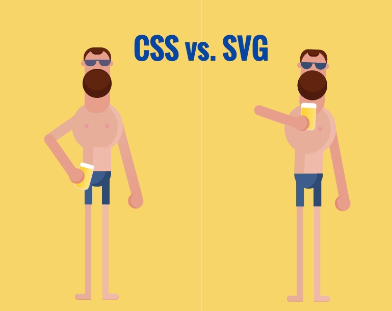
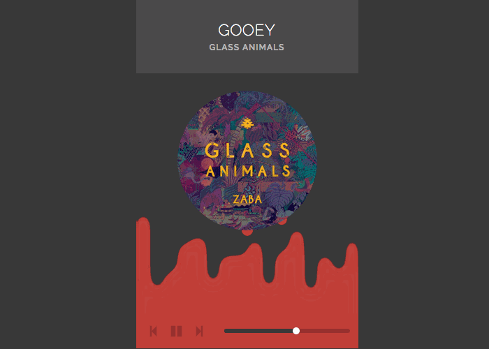

30个超棒的SVG动画展示
这里我们收集了一些超酷的基于SVG的动画效果，给大家一些参考。这些动画有的使用了SVG动画，也有是使用CSS做基本动画，用JS做更丰富的效果。
Border Animation by Sean McCaffery
纯CSS，文字边框环绕，hover时触发。
Elastic SVG Sidebar by Nikolay Talanov
侧边栏拉出时的弹性效果。用于材料设计『Material Design』的应用的概念设计。
Pull Down to Refresh by Nikolay Talanov
一个下拉刷新效果。
Animated Gradient on Text by Patrick Young
渐变文字的动画效果。
Heart Animation by Nikolay Talanov
变换用CSS实现，嗯，一个心形的实现过程动画。
Let’s Travel by jjperezaguinaga
一个描述城市和旅游目的地的动画。部分使用CSS动画完成。
Menu toggle animation by Tamino Martinius
一个汉堡包图标的变形动画
Animated Infographic by Sdras
Sarah Drasner做的一个牛逼动画，基于GSAP timeline。
Rain-Bros don’t like JS by cihadturhan
Clock by Mohamad Mohebifar
Rainbow Rocket Man by Chris Gannon
Animated Icon by Luigi De Rosa
Flat Workspace by Hoàng Nhật
扁平化的工作台展示。创作者使用了 GSAP。
The clickable animated icon by Hamish Williams
这个酷酷的动画使用了 snap.svg 库。
Diving by Chris Gannon
Motion for the web by LegoMushroom
使用了mo.jsJavascript图形库。
Animated writing font by Lee Porter
Gooey menu by Lucas Bebber
New Cake by Marco Barría
Thank you by Rachel Smith
CSS vs SVG by Mario Sanchez Maselli

Walking Dog by Mark Nelson
Hourglass loader by Leela
Logo Animation by Adem ilter
纯SVG实现的动画。
Stats animation by Jonas Badalic
使用Snap.SVG 库实现的一个SVG动画。
Ouroboros by Noel Delgado
超酷SVG动画路径，使用了tween.js。详细的教程 可以看这里。
Creative Gooey Effects by Lucas Bebber

Throw the cow by Sarah Drasner
又是基于TweenMax
Animated Logo by Ali
整理自：30 Awesome SVG Animation For Your Inspiration
请尊重版权，转载请注明来源，谢谢